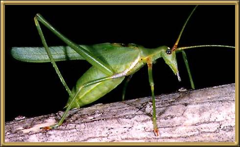

Photographer: Unknown
Other than the fact that this would appear to be a cricket of some sort, and is definitely Australian, I know nothing more about it. I have not even been able to determine its common name, if it has one. So anyone out there who can help with this, please email me!